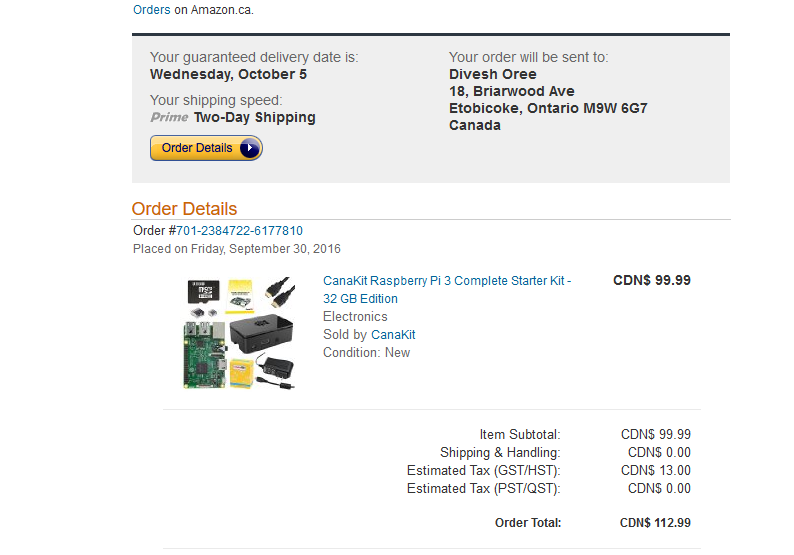
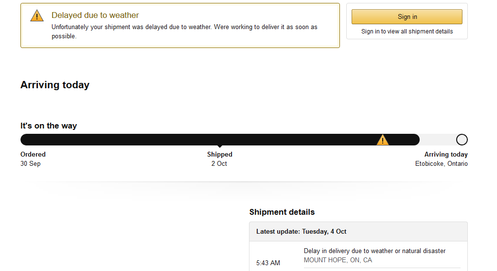
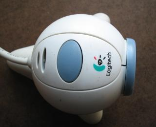
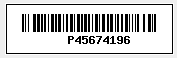
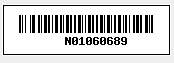
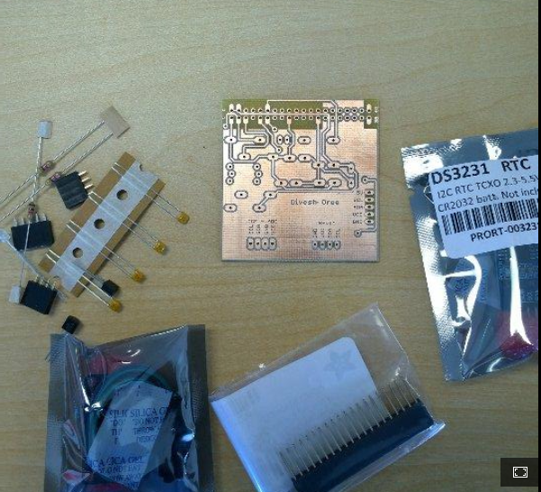
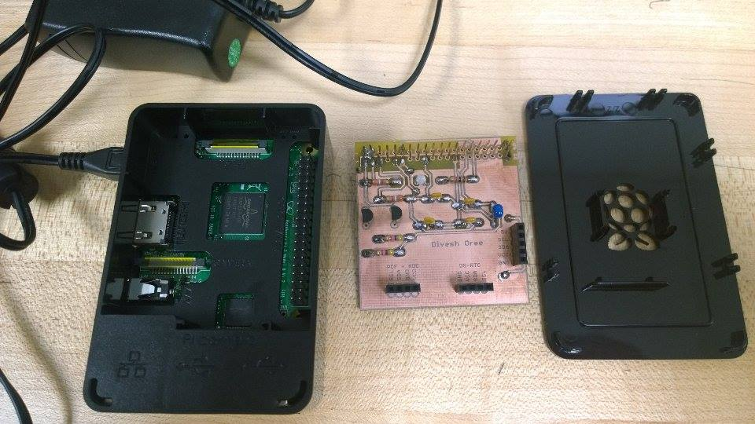
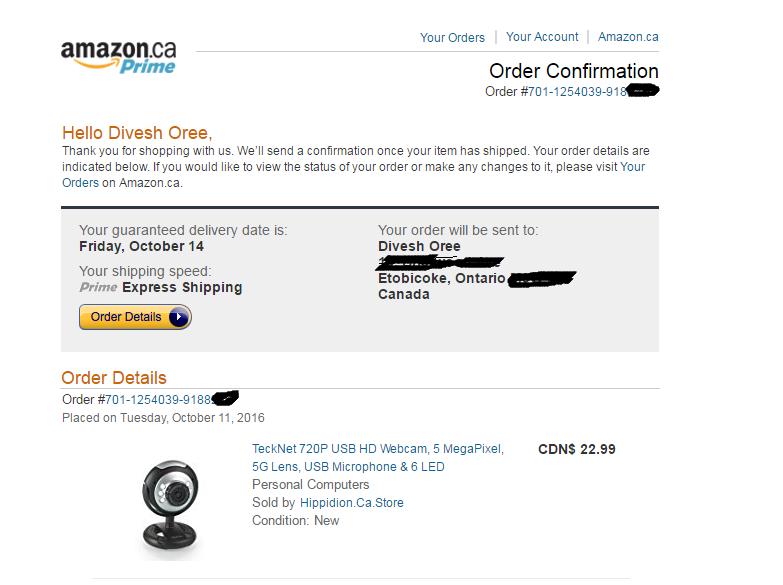
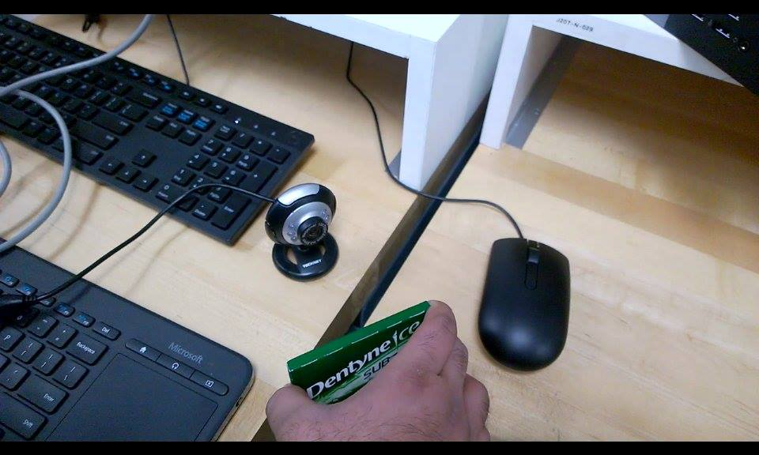

Week 2
On week 3, we worked on GANTT chart; How much time we will take for each specific task
Week 3
We submitted our budget in exchange of our GANTT chart. In our budget, we included all the parts and their prices.
Week 4
On week 4, we submitted our Progess report in exchange of our budget.
Please find images as followed below:
Purchase of Raspberry Pi 3
Delay in the arrival due to weather condition
Logitech Webcam
Sample Barcode Strips
Item Barcode Strips
Student Barcode Strips
PLC Board
Week 4 Progress Report
Unboxing Video
Week 6
On week 6, I videotaped the unboxing of the raspberry. I managed to assembly my raspberry pi 3 and also solder my circuit board. Please find pictures and and video as attached below:
PCB Soldered

Problem Encountered
I was facing some technical issues with my webcam, so I has to order an another one on Amazon.ca. Delivery date is expected on 10/14/2016. Please note, my budget got exceeded due to the webcam purchase. I will have to spend 22$ because the previous webcam was mine.
Week 6 Mechanical Assembly
Week 8
So here in week 8, we are submitting our placard.
Week 9
30 Seconds Build Video
Week 10 Progress Report
In week 10, my group (Rafil,Masoud and Gurpreet) and I, we demonstrated to the whole class the functionality of our project, the Humber parts crib. The whole program was run on python platform. We were successful in demonstrating how we can use the camera to scan any barcode and display it on the monitor. How it works? So basically, we get a barcode, we scan it using the camera, the number on the barcode is saved in a text file then if we use the ‘cat’ command, we should be able to see the scanned barcode. Every time, a barcode is scanned, that text file is updated with the new barcode.
Problems encountered: We noticed that scanning the barcode took us some time due to the quality of our cameras. Therefore, we decided to make a stand to make the scanning process more effective and quick rather than trying to find the appropriate spot to get it scanned. In case if our budget allows us, we might get a barcode laser scanner to scan our barcodes or as we discussed in class with our Professor Kristian Medri, we might talk to the School of Applied Technology, if they can help us to accommodate this effective tool to make this project better.
Progress Report (Week 10)
Scanning barcode of a gum packet
Displaying the barcode on the monitor

Week 11 Progress Report
After demonstrating the functionality of our hardware project, in this week 11 we will go on to build our case for our hardware. We also demonstrated our hardware project (scanning the barcode of different barcode strips) to our teacher Mr. Kristian Medri. As we decided to make a camera stand for our cameras because last week, we were facing some issues in order to scan the barcode strip properly. We will start working towards that by stepping on the designing phrase then if everything is good then we will move to the building phrase. Our other option was we might go to the Applied Technology and see if they can help us with a laser scanner in order to make this project more effective and less time consumming.
One more thing added by our teacher, is the LED. The main purpose of it will be, it will allow the user to know whether a barcode was scanned successful or not through the LED light color.
Progress Report (Week 11)
Week 12 Progress Report
So basically, I am right on my schedule in order to finish my hardware project. After the demo in the open house my colleagues and I, we got some nice feedbacks from our teacher Kristian Medri as well as from our classmates. By the end of this week, I should have my case design and build as I am going to use it on the 6th December, 2016 for my presentation. One more thing which I noticed is that the scanning the barcode strips was taking too much time due to the webcam quality. I decided that I will make a cardholder stand which will be connected with the case and it will hold the card in a fixed “sweet” spot where it will be easy to scan and display the information. As I learnt in the class, we do have a very effective tool, openSCAD which might be very helpful in designing the case and the cardholder stand. As mentioned by our teacher, he wanted us to have some sort of indication whether the barcode is getting scanned or not, so for that I decided to make use of my PCB’s led light. For example; the light toggles to green when the barcode is scanned successfully and then switch back to red if the scan is failed. I will do this in order to make the project look more effective and more convenient to use. I discussed with my colleagues if the School of Applied Technology can provide us with a laser scanner as we are designing and working on a project related to Humber College, however we might meet the Dean by Wednesday of this week in order to further discuss on this. If ever the Dean cannot help us, then we might leave the laser scanner for next semester as we will work as a group. We can contribute and get a new one.
As concerned with the schedule, I think I am on track with everything that I mentioned on my Gantt chart. I have been working on the project consistently which was a good as it allowed me to stay on my schedule which I planned on Week 3.
For the budget, I am most likely sure that I will not have to spend any money as everything is set. As for the LED, I am going to use my PCB which we built and soldered in week 6. Today, me and my colleagues we worked on toggling the LED lights while scanning the barcode and we were successful so this will surely save me on the cost as I will not have to purchase LEDs. To conclude on the cost, as seen from my budget (Purchase of new camera - $23) and print screen shots, I am spending CAD $123 on the project (The raspberry pi 3 and the camera).
In terms of moving forward, I will start working on my presentation and also get the few things as mentioned above to get done before next week.
Progress Report (Week 12)
Week 13 Powerpoint Presentation
So basically, this week and next week is the presentation day. My turn is next week. Please find the powerpoint of my presentation below
Powerpoint Presentation (Week 13)
Week 14
Build Instructions
Here is a link to the Build Log that gives detailed instruction about the my build log